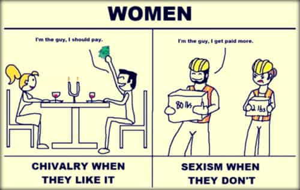
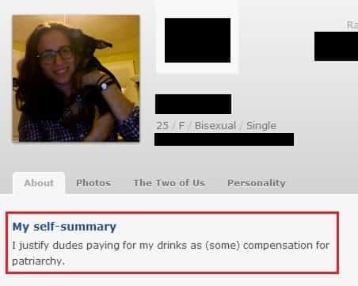

< < < Back
All Girls Are Cheapskates – Return Of Kings
The other day, I came home from the gym to a flashing light on my cell phone. When I read the text message that had prompted the alert, I saw that it was from a second-string fuck buddy who’s managed to survive a couple of rounds of major layoffs due to her contributions to the company (her willingness to come over for short-notice sex at odd hours of the night and her above-average skills at giving back massages).
Are you home?
While I might ignore such a text on a different night, my full testicles decided to handle the reply, taking it upon themselves to ask “why?” That prompted a call, which I reluctantly answered.
Me: What’s up?
FB: Hey, I’m in your neighborhood. If you’re home, I can stop by and say hi.
Me: I just have to jump in the shower, but sure.
FB: Oh, and do you have anything to eat? I haven’t eaten since lunch.
Me: Ummm, I think I have some snacks in the fridge.
FB: Snacks?! Well [weighing options]…okay…I’ll see you in 10 minutes.
I couldn’t help but wonder if her visit was more about “saying hi” to me, or to my fridge, with whom she’d developed a close relationship in the prior few weeks. While this girl usually does more of the traveling (to get to my house), she’s been handsomely compensated with drinks made from top-shelf liquor; home-cooked meals; and a series of toiletries that I keep expressly for guests (e.g., contact solution). Not once has she cooked a meal for me or brought something with her, with the exception of a half-eaten sandwich she proceeded to finish in front of me one time.
What’s astounding about the situation isn’t how unusual her gall was, but how thoroughly unsurprising it was. Her behavior is well in-line with the overwhelming majority of girls I’ve encountered. Dating American women, from a wide range of geographic regions and socioeconomic backgrounds, has taught me one thing: they’re almost universally cheapskates, who are not only allergic to spending their own money, but have developed elaborate techniques for extracting stuff out of men while minimizing their own overhead.
In world striving for so-called gender equality, women are content with not only selectively holding onto this relic from the past, but indeed updating it to new realities.

This is a tiny sampling of the tacky, cheapskate behavior—from various girls–that I’ve encountered just in the last two years:
Trying to bring a half-finished bottle of wine home
A girl that I’d seen a few times finally came over not-empty-handed. She’d brought a “nice” bottle of wine, of which we finished maybe 65 percent. The next morning, after she’d finished her half of the fresh pot of coffee I’d brewed, she checked if the cork was securely on the wine bottle she’d brought and started walking out with it. When I said, “what are you doing?” she replied “it’s good wine!” “That’s why I’m not going to let it go to waste,” I said as I pried it out of her cold stiff hand. The next day, I made marinara sauce out of it.
Asking me for the three dollars I “owed her”
Despite the fact that I’d paid for a couple of meals in full, I’d incurred a three-dollar “debt” with a girl when we actually went dutch on our third meal out together. When, on the way back to the car, I suggested that I’d pay her “in kind,” she snapped back with, “I’d prefer the cash, thanks.” When I “forgot” to pay her, she reminded me a few days later.
Telling me to make her another drink because she didn’t like the first one I’d made her
After making a girl a fine gin and tonic—with Hendrick’s gin, cucumber slices, and premium tonic water—she informed me that she “didn’t like it,” and asked me if I could make her another one. She literally took one sip of it and left it there. I handed her a Pabst Blue Ribbon in a can instead. “Maybe this is more your speed.”
Asking if she should leave her wallet home altogether
As this girl and I were headed out from my place—to get something to eat and have a night out on the town–she asked me if she “even [needed] to bring [her] wallet.” I answered, “Nah, just grab your credit card and some cash.” She brought her whole purse.
Ordering a bunch of food, jacking up the price of the bill, then asking to evenly split
Not all of these stunts have been from girls I was dating or banging. In this case, it was a group of marginal acquaintances of a girl I was dating—though I’ve had this exact scenario happen on various occasions. The three girls decided to order every “special” dish and gimmicky drink on the menu, each of which carried a premium price tag. I ordered my standard, reliable dish. Since they serve everything “family style”—and the girls turned out, as they always do, to dislike what they got—they proceeded to tap my dish. Having depleted my plate, which is always solid, they left their own tasteless experiments behind. When the bill came, they climbed over each other to suggest that we split it evenly. Imagine their surprise when I announced I was only paying for my stuff.

This only begins to scratch the surface of the brazenly cheap moves that I see from women as a matter of course. Most of the behaviors are so common that I’m more surprised when they don’t happen: the most unconvincing, half-assed reaches for their purses times perfectly so your wallet comes out first; suggesting a fancier, more expensive plan, only to drag their feet come check time; and an array of disrespectful acts on my car or my home–from leaving trash behind, traipsing dirt onto the rugs, or shoving nice stuff aside to sit down. I’m no cheapskate myself, but I’m also no rich man. And, it’s not like these are broke chicks either. They were—more times than not—thoroughly solvent, came from money, or were decked out in designer clothes.
For all of the complaining that we hear, girls refuse to acknowledge the astounding number of freebies that they get on a regular basis–to the degree that they come to expect them everywhere they go and from every (especially male) person they meet. Sure, the hotter the girl the more accustomed to not paying she is. But, from free meals on dates, to free drinks from chumps at bars, to unsolicited free samples at Whole Foods, it’s good to be a chick in America.
Read More: All Girls Are Spoiled Children


{kind=link}
{kind=link}